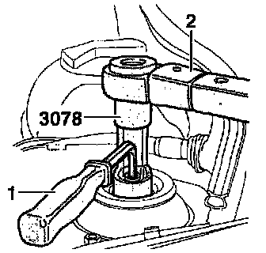
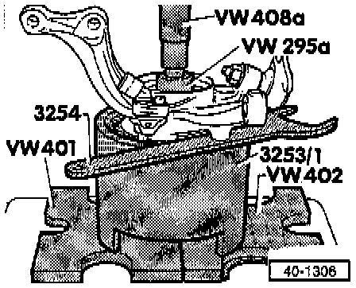
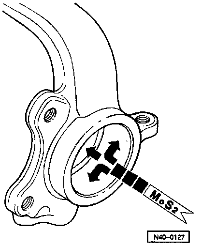
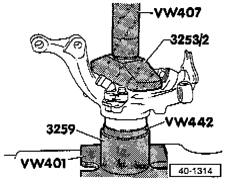

Plus Suspension
Wheel Bearing, Suspension Strut and Drive Axle, Removing and Installing(Plus Suspension)
CAUTION:
- If a vehicle has to be moved after removing the axle shaft, install an outer constant velocity joint and tighten to 50 Nm (37 ft lb) to prevent damage to wheel bearing.
- DO NOT attempt to straighten or weld suspension strut, wheel bearing housing, control arm or any other wheel locating or load bearing components of the front suspension.
- Always replace self-locking bolts.
- Always replace corroded bolts/nuts.
- Directly below the component legend are the Fig. numbers. Please refer to these for information regarding removal and installation instructions.

1 Lug Bolt
- Tighten to: 110 Nm (81 ft lb)
2 Self-Locking Nut (12-point)
- Revised wheel hub, Application and ID
- Tighten to: 90 Nm (66 ft lb) plus additional 1/8 turn (45°)
- Loosening/tightening, refer to Transmission and Drivetrain
- Paint and/or corrosion on threads of outer constant velocity joint must be removed before nut is installed.
3 Screw
4 Brake Disc
- Refer to Brakes and Traction Control
5 Brake Caliper
- Do not loosen hydraulic connection when working on suspension
- Do not let caliper hang by brake hose; tie up with wire
- Replacing brake pads, refer to Brakes and Traction Control
6 Screw
7 Wheel hub
- Pressing out, refer to Fig. 2
- Pressing in, refer to Fig. 7
- Removing bearing inner race, refer to Fig. 3
8 Rotor For ABS Wheel Speed Sensor
9 Splash Shield Mounting Bolt
- Tighten to: 10 Nm (82 inch lbs.)
10 Splash Shield
11 Circlip
- Make sure clip is seated correctly
12 Wheel Bearing
- Pressing out, refer to Fig. 4
- Always replace (circlip is destroyed when removed)
- Pressing in, refer to Fig. 6
13 Tie Rod To Knuckle Nut
- Tighten to: 35 Nm (26 ft lb)
14 Wheel Bearing Housing
15 Countersunk Bolt
- Tighten to: 125 Nm (92 ft lb)
16 Drive Axle
- Revised version, Application and ID
- Removing, repairing and installing, refer to Transmission and Drivetrain
- Remove all paint residue and corrosion from threads of outer constant velocity joint before installing nut
17 Axle To Drive Flange Bolt
- Tighten to: 45 Nm (33 ft lb)
18 Bolt
- Mark installation position before removing
19 Bolt
20 Bracket
21 Stop
- Removing and Installing, refer to Fig. 1
22 Strut Shaft Self-locking Nut
- Removed when suspension strut is disconnected from strut tower
- When loosened or removed, the slotted nut below must be re-tightened to 60 Nm (44 ft lb)
- Tighten to: 60 Nm (44 ft lb)
- Loosening/tightening, refer to Fig. 1 below
23 Suspension Strut
- Disassembling/assembling, refer to Assembly
24 Strut To Knuckle Nut
- Tighten to: 95 Nm (70 ft lb)
25 Tie Rod End
- Removing/installing. Service and Repair
NOTE: For these procedures, use the tools shown in the following illustrations or their equivalents.

Fig. 1 - Suspension Strut To Body, Loosening/Tightening
NOTE: Tool 3186 spring compressor may also be used in place of tool 3078 (shown).

Fig. 2 - Wheel Hub, Pressing Out Of Wheel Bearing Housing

Fig. 3 - Wheel Bearing Inner Race, Removing
- Only use commercial puller with tensioner, e.g. Kukko 204/2.

Fig. 4 - Wheel Bearing, Pressing Out Of Wheel Bearing Housing

Fig. 5 - Lubricating inner surface of wheel bearing housing
- Coat completely with MoS2 grease.

Fig. 6 - Wheel Bearing, Pressing Into Wheel Bearing Housing

Fig. 7 - Wheel Hub, Pressing Into Wheel Bearing